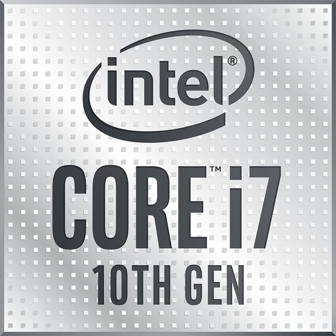

Intel core i7

Intel Core i7 10e generatie
Productbeschrijving
De Intel Core i7 10e generatie is een krachtige processor met geavanceerde technologieën voor optimale prestaties.
De Intel Core i7 10e generatie is een kracht processor die is ontworpen voor high-performance computers. De i7 10e gen heeft 4 tot 8 kernen en 8 tot 16 threads, waardoor het geschikt is voor veeleisende taken zoals gaming, videobewerking en multitasking. Het heeft een kloksnelheid van 2,0 GHz tot 3,8 GHz en maakt gebruik van de Intel Turbo Boost-technologie om de prestaties indien nodig te verhogen. Daarnaast ondersteunt het DDR4 RAM-geheugen en heeft het een geïntegreerde grafische kaart voor een vloeiende beeldweergave. Kortom, de Intel Core i7 10e gen levert uitstekende prestaties voor gebruikers die behoefte hebben aan een snelle en betrouwbare processor.